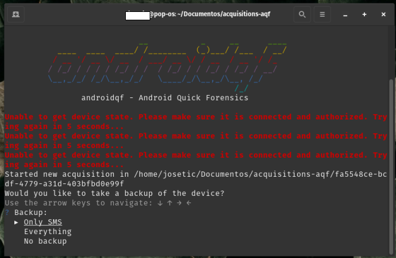
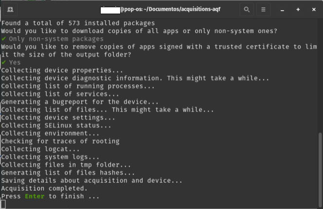

Guia: ¿Cómo realizar una adquisición y extracción mediante AndroidQF?
Este documento forma parte de un repositorio de documentación técnica que tiene como objetivo establecer una base de conocimientos probados, flexibles y accesibles para impulsar el análisis forense consentido en beneficio de la sociedad civil. Para organizar los contenidos, se utiliza el marco de referencia de documentación técnica Diataxis.
Este recurso se enmarca dentro de la categoría de Guia, how-to, y contiene las instrucciones para realizar una extracción forense con la herramienta AndroidQF.
¿Qué es AndroidQF?
AndroidQF es una herramienta de software libre y de código abierto enfocada en la extracción forense de dispositivos Android. Actualmente mantenida por el Laboratorio de Seguridad de Amnistía Internacional.
Su enfoque está pensado especialmente para periodistas, activistas, defensores de derechos humanos y los laboratorios técnicos que acompañan casos de vigilancia digital y amenazas de software espía.
AndroidQF funciona como un wrapper forense sobre ADB, automatizando comandos comunes mediante módulos que permiten realizar extracciones rápidas, seguras y locales desde cualquier sistema operativo (Linux, Windows o macOS), sin depender de servicios en la nube ni instalaciones complejas.
Su utilidad en contextos de sociedad civil radica en su portabilidad, facilidad de uso y ejecución local.
Esta guía es complementaria se complementa con otros materiales, como el diccionario de archivos generados por AndroidQF, sus formatos y recomendaciones de uso o el explainer sobre forense basada en logs para dispositivos Android.
Prerrequisitos para realizar la extracción forense
Para poder realizar una extracción con AndroidQF es necesario:
- El dispositivo Android a ser analizado: Activar el modo desarrollador y activar la depuración por USB. De ser necesario, consulta nuestras guías sobre habilitar opciones de desarrollador o la guía sobre cómo habilitar ADB.
- Computadora Windows, Linux o Mac: Se utilizará para realizar la extracción. Es necesario conocer cuál es chip integrado del equipo
- Tener un cable para transferencia de archivos telefono-computadora.
Cifrado de extracciones
Este procedimiento permite habilitar el cifrado automático de las extracciones generadas por AndroidQF usando una llave pública AGE. Se recomienda cuando la extracción se realiza de forma remota, por lo que se debe enviar o compartir información a través de medios virtuaeles, por lo que existe riesgo de exposición o se sigue alguna política de privacidad.
Para ello sigue los siguientes pasos:
- Si eres quien descifra información, debes crear una llave pública y una llave privada siguiendo la documentación oficial.
- Si cifras a nombre d eun aorganizació u otr apersona analista, pide a la persona su llave pública AGE .
- En el mismo directorio donde se encuentra el binario de AndroidQF, crea un archivo llamado: key.txt
- Abre key.txt, pega la llave pública completa en una sola línea y guarda los cambios.
Para descifrar el .zip, lo único que tienes que hacer es lo siguiente:
-
Crea un archivo .txt llamado private.key en el directorio donde se encuentra el binario de andoridqf y abrelo y pega la llave privada la cual empieza con: AGE-SECRET-KEY-...
-
Ejecuta el siguiente comando para poder descifrar información:
$ age --decrypt -i ~/path/to/privatekey.txt -o <UUID>.zip <UUID>.zip.age
Verifica el par de llaves
Asegúrate de que la llave privada sea el par de la llave pública.
Pasos para obtener un extracción forense con AndroidQF
A continuación se presentan los pasos detallados para realizar la extracción forense:
Descargar el binario en AndroidQF
-
Descarga la versión más reciente del binario, y que corresponda a la arquitectura del equipo de cómputo donde se va a ejecutar. La descarga se realiza de los releases del repositorio: https://github.com/mvt-project/androidqf/releases/
¿Cómo identificar la arquitectura?
Si no estás seguro cuál es la arquitectura del equipo que estás utilizando, consulta este recurso para conocer cuál es el chip integrado en el dispositivo.
-
Crea una nueva carpeta para almacenar la exrtacción del dispositivo. Mueve el binario recién descargado a esta carpeta.
Asignar permisos de ejecución al binario descargado (solo Linux y macOS)
-
Si estás utilizando un equipo con Linux o macOS para la extracción, es necesario asignar el permiso de ejcución al archivo antes de poder ejecutarlo. Para esto, abre una terminal y navega a la carpeta donde se encuentra el binario, luego ejecuta:
Completa el nombre
Al ejecutar el comando, asegúrate de completar el nombre androidqf_ con el nombre completo del binario descargado en el paso 1. El comando resultante será algo como:
chmod +x ./androidqf_v1.7.1_linux_amd64En linux:
chmod +x ./androidqf_En macOS:
chmod +x ./androidqf_
Conectar el teléfono
-
Conecta el dispositivo desbloqueado a la computadora utilizando un cable de datos USB.
No todos los cables USB son iguales
Algunos cables USB no tienen las conexiones necesarias para transferir datos entre el dispositivo móvil y la computadora. Asegúrate de utilizar un cable que permita transferir datos. Es difícil distinguirlos a simple vista, pero usualmente los cables de carga rápida o aquellos incluídos con los dispositivos suelen ser cables de datos.
-
Cuando se conecte el teléfono, aparecerá un nuevo mensaje. Selecciona permitir cuando el dispositivo Android solicite permiso de acceso a los datos del dispositivo, tal y como se muestra en la imagen 1.
No aparece ningún mensaje
Si al conectar el dispositivo a la computadora no te aparece ningún mensaje sobre permisos, revisa lo siguiente:
- Asegúrate que la depuración por USB se encuentre habilitada.
- Revisa las configuraciones de USB y asegúrate que la opción de transferencia de archivos se encuentra habilitada.
- Asegúrate de que el cable USB sea un cable de datos.
Imagen 1. Captura de pantalla de dispositivo móvil Android Samsung solicitando permiso de acceso a datos.
-
Verifica que el archivo key.txt esté en la misma carpeta del binario andoridqf si es que deseas cifrar la extracción.
Ejecutar AndroidQF
En este punto es posible ejecutar androidQF siguiendo estas instrucciones:
Ejecuta con el siguiente comando. Asegúrate de completar androidqf_ con el nombre completo del binario descargado.
./androidqf-linux-v?
./androidqf-macos-v?
Imagen 2. Captura de pantalla de terminal de linux con ejecución del binario para el inicio de la extracción
- Ingresa a la carpeta donde se guardó el binario descargado en el paso 1, y da doble click primario sobre el archivo. Aparecerá una ventana de protección de Windows, da click en “Más información”
Imagen 3. Captura de pantalla de ventana emergente de protección de Windows.
- Selecciona “Ejecutar de todas formas”

Imagen 4. Captura de pantalla de ventana emergente de protección de Windows con la selección de ejecutar de todas formas.
Confirmar y configurar la extracción
Los próximos pasos se aplicarán de la misma manera en los 3 sistemas operativos considerados en este tutorial: Linux, Windows and macOS.
-
AndroidQF identificará el dispositivo de forma automática una vez que permita la depuración USB y generará una carpeta con un identificador único (UUID). En esta carpeta se almacenará la extracción.
!!! question ¿Qué es un UUID?
Es un número generado de forma aleatoria, tse expresa mediante 32 dígitos hexadecimales divididos en cinco grupos separados por guiones de la forma 8-4-4-4-12 lo que da un total de 36 caracteres (32 dígitos y 4 guiones), por ejemplo ```0caba18f-20a7-48d0-b9ba-724fdaa3ff85``` -
Posteriormente AndroidQF preguntará el tipo de respaldo que realizará la herramienta:
- Only SMS: Realiza un respaldo limitado que incluye solo mensajes SMS y MMS.
- Everything: Ejecuta un respaldo completo del dispositivo mediante adb backup.
- No Backup: Omite completamente la generación de respaldos; solo extrae otros artefactos vía ADB.
Alternativa
Para el ejemplo usamos la opción Only-SMS para limitar la extracción únicamente a mensajes, reduciendo la exposición de datos personales innecesarios. Si el contexto del caso se considera de alto riesgo o implica investigación más sofisticada se recomienda marcar la opción Everything, aunque la opción Only-SMS en la mayoría de los casos sigue siendo suficiente para buscar intentos de phishing mediante SMS.

Imagen 6. Captura de pantalla de terminal de linux con el menú backup de AndroidQF y la opción Only SMS seleccionada.
-
Al seleccionar el tipo de respaldo, el teléfono solicitará utilizar una contraseña temporal de cifrado para cifrar el respaldo generado a través de ADB. En nuestro ejemplo utilizamos la contraseña “sd” de seguridad digital en español, tal y como se muestra en la imagen 7.
Alternativa
Esta contraseña permite cifrar la copia de seguridad que se genera al ejecutar androidqf. En caso de generar contraseñas aleatorias, asegúrate de utilizar un gestor con adecuadas prácticas de respaldo. De lo contrario, y sino representa un riesgo, establece una contraseá simple y equivalente para todas tus extracciones.

Imagen 7. Captura de pantalla de dispositivo móvil Android Samsung solicitando la contraseña temporal del backup “sd”
-
Selecciona: “Copia de seguridad de mis datos”.
Imagen 8. Captura de pantalla de dispositivo móvil Android Samsung con la opción “Copia de seguridad de mis datos” seleccionada
Mensajes de errores esperados
En algunas ocasiones, suelen aparecer errores sobre la búsqueda de las rutas donde se encuentran los paquetes, por lo que es común ver algunas de estas marcas de error, sin embargo, estas marcas de error no afectan la extracción de datos forenses en el dispositivo.*

Imagen 9. Captura de pantalla de terminal de linux indicando la recolección de información de paquetes de aplicaciones por parte de AndroidQF.
-
Cuando AndoridQF encuentra todos los paquetes instalados en el dispositivo preguntará qué tipo de copias de las aplicaciones se desea descargar, para ello hay 3 opciones:
- All: Descarga los APK de todas las aplicaciones, incluidas las del sistema.
- Only non-system packages: Descarga solo los APK de aplicaciones instaladas por el usuario.
- Do not download any: Omite completamente la descarga de APKs del dispositivo.
Alternativa
Aunque nuestra recomendación es seleccionar “Only non-system packages”, la selección depende de tu enfoque de análisis e investigación, por lo que en casos con sospechas de ataques sofisticados se puede utilizar la opción “All”.
Imagen 10. Captura de pantalla de terminal de linux con el menú copias de paquetes de aplicaciones de AndroidQF y la opción Only non-system packages seleccionada.
-
Una vez seleccionada la opción de descargas de copias de paquetes, AndroidQF preguntará acerca de eliminar los APKs firmados por desarrolladores o entidades confiables (como Google o el fabricante del dispositivo), esto con el fin de reducir el tamaño de la carpeta de extracción.
- Responde “Yes” para que, al realizar la revisión de la información se pueda enfocar el análisis en los paquetes que sean potencialmente sospechosos, además de que ahorrará tiempo y espacio de almacenamiento.
Alternativa
Aunque nuestra recomendación es seleccionar “Yes”, la selección depende de tu enfoque de análisis e investigación, por lo que en casos con sospechas de ataques sofisticados se puede utilizar la opción “No”.

Imagen 11. Captura de pantalla de terminal de linux con el menú de omisión de aplicaciones con certificado confiable de AndroidQF y la opción Yes seleccionada.
-
Espera a que todos los módulos de AndroidQF se ejecuten de acuerdo a su programación.
Duración del proceso
Esta etapa puede tomar varios minutos, dependiendo del modelo del teléfono y la cantidad de datos almacenados. El progreso se muestra línea por línea en la terminal y no requiere intervención adicional, salvo al final, donde se debe presionar Enter para completar.

Imagen 12. Captura de pantalla de terminal de linux con información de ejecución correcta de la extracción forense con AndroidQF y solicitando presionar enter para terminar.
Verificar la extracción
Una vez finalizada la ejecución de AndroidQF, es importante validar que la adquisición se completó correctamente. Para ello, realiza los siguientes pasos:
-
Si recibiste una extracción cifrada, es necesario descifrar esta información primero, puedes consultar la sección sobre cifrado de extracciones.
-
Abre el archivo command.log con un editor de texto y busca las palabras warning o error. Si aparece revisa si corresponden a fallos críticos o eventos no relevantes.
Puedes usar el comando siguiente dentro de la carpeta de la adquisición:
grep -i "WARNING\|ERROR" command.log

Imagen 13. Captura de pantalla de terminal de linux con el comando grep para buscar errores en el archivo command.log generado por AndoridQF.
Abre el archivo con “Bloc de notas”, selecciona la combinación de teclas ctrl+b y escribe WARNING o ERROR.

Imagen 14. Captura de pantalla de Bloc de notas de Windows con la búsqueda de errores en el archivo command.log generado por AndoridQF.
-
Verifica la existencia del archivo acquisition.json y que su contenido se vea adecuado.
Imagen 15. Captura de pantalla de Sublime Text Con la salida del archivo acquisition.json generado por AndoridQF.
-
Comprueba la creación de archivos y carpetas de salida. Asegurate que se hayan generado los siguientes archivos y carpetas:
├── apks/ ├── logs/ ├── tmp/ ├── .json ├── backup.ab ├── bugreport.zip ├── command.log ├── dumpsys.txt ├── env.txt ├── files.json ├── getprop.txt ├── hashes.csv ├── logcat.txt ├── packages.json ├── processes.txt ├── root_binaries.json ├── selinux.txt ├── services.txt ├── settings_global.txt ├── settings_secure.txt └── settings_system.txt
Imagen 16. Captura de pantalla de la aplicación archivos en PopOS! mostrando la carpeta de salida de archivos y directorios generados con la extracción forense con AndroidQF.
Conclusión
AndroidQF permite realizar adquirir y extraer evidencia forense de dispositivos Android. Es una herramienta ampliamente utilizada por laboratorios de la sociedad civil, debido a su practicidad, simplicidad y portabilidad. En esta guía detallamos el paso a paso a seguir para realizar extracciones utilizando Windows, MacOS o Linux.
La extracción de potencial evidencia es una de las primeras etapas a seguir dentro de una investigación forense, y es clave para poder iniciar un triaje. A partir de esta información extraída, se puede iniciar una etapa de análisis, ya sea de forma manual (pudes consultar el diccionario de archivos aquí o utilizando una herramienta como MVT.
Si deseas contribuir con el desarrollo, la traducción o difusión de este recurso u otros recursos, revisa nuestra sección de comunidad donde encontrarás más información al respecto.
Comentarios
¿Tienes comentarios o sugerencias sobre este recurso? Puedes utilizar la función de comentar que se muestra a continuación para dejarnos tus ideas o apreciaciones. Por favor asegúrate de seguir nuestro código de conducta. La función de comentarios enlaza directamente a la sección de Discussions de Github, donde también puedes participar en las discusiones de forma directa, si lo prefieres.